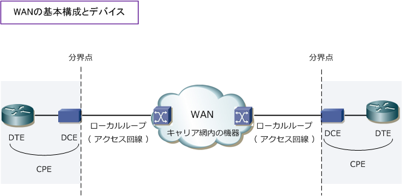
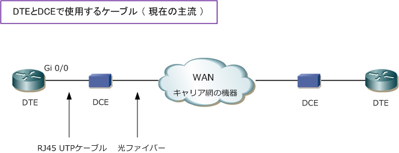
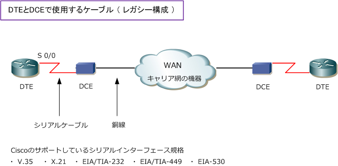
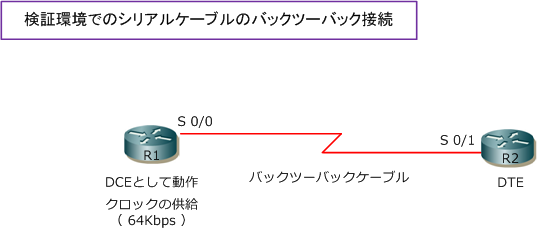

WAN - DTE / DCE / ONU
WANの基本構成とデバイス
WANで使用するデバイスと機器構成は以下の通りです。ただし、WANサービスの種類により異なります。

| WANデバイス | 説明 |
|---|---|
| DTE | DTE（Data Terminal Equipment）はデータを送受信するユーザ側の機器。DTEはDCEを介して WANと接続を行い通信する。WANがシリアル回線の場合、DTEはDCEから供給されるクロック信号 を利用して通信する。DTEはルータ、パソコンなどが該当します。DTEの日本語訳はデータ端末装置。 |
| DCE | DCE（Data Circuit-Terminating Equipment）は、DTEから送られる信号をDCEが接続している 網に適した信号に変換して送信。WANの網から送られてくる信号をDTEに適した信号に変換し送信。 WANがシリアル回線の場合、DCEはクロック信号を送信する。DCEはモデム、DSU、ONUが該当。 WAN回線サービスの種類に応じてDCEの機器が異なる。DCEの日本語訳はデータ回線終端装置。 |
| CPE | CPE（Customer Premises Equipment）は、契約した加入者宅に設置される通信機器の総称。 CPEは、DSUなどのDCEだけでなくルータなどのDTEなども含まれる。CPEの訳は顧客宅内機器。 |
| 分解点 | キャリアと加入者の責任分解点を示す。日本では、DSU、ONUもキャリアのレンタル機器となる ことから責任分解点はDCE以降はキャリア側、DCEまでの配線部分までが加入者（企業）側となる。 |
| ローカルループ | ローカルループは、加入者の敷地にある責任分解点からキャリア網のWAN機器までの回線のこと。 WANがPSTNやISDNの場合はローカルループ、WANがPSTNやISDN以外ならアクセス回線という。 |
以下の項目ではDCEの代表例であるモデム、 DSU、ONUについて詳しく解説しています。
なお、現在ではアナログモデムはWAN回線の DCEとして使用される事は、ほぼありません。
モデムの使われ方は、モデム内蔵のPCから アナログ回線にダイヤルアップ接続を行って 企業ネットワークにアクセスして通信機器の メンテナンスを行うといった管理アクセスの 手段として使用することが多いです。
| DCE | 説明 |
|---|---|
| モデム | PSTN (Public Switched Telephone Network) との接続時に使用されるDCE。PSTNは公衆電話網。 モデムを利用する場合はアナログ接続となるので、モデムはアナログのローカルループを終端する。 |
| DSU | ISDN (Integrated Service Digital Network) との接続か、デジタル専用線との接続時に使用される DCE。DSUを利用する場合はデジタル接続となるのでDSUはデジタルのローカルループを終端する。 |
| ONU | IP-VPNや広域イーサネットとの接続か、高速なデジタル専用線との接続時に使用されるDCE。 ONU (Optical Network Unit) ：光回線終端装置という名前どおり、アクセス回線は光ファイバー。 |
DTEとDCEのケーブル接続
現在企業ネットワークで使用されている主なWANサービスは、IP-VPNや広域イーサネットであることから DCEの機器は ONU になることが多く、DTEとDCEとの接続ケーブルはRJ45のLANケーブルを使用します。

一方、従来のWANにおけるDTEとDCEとの接続ケーブルには、シリアルケーブルを主に使用していました。 その場合はルータにはシリアルインターフェースを用意して、DTEとDCEとの接続はその規格に適合した シリアルケーブルで接続します。Ciscoルータでは下図の規格のシリアルインターフェース規格をサポート。

Ciscoルータで実際に現在接続されているシリアルケーブルの規格を確認するためには show controllers コマンドを使用します。上図のルータではSerial 0/0にシリアルケーブルが接続しているので、以下の通り show controllers s0/0 と入力することで、このシリアルケーブルの規格が V.35 であることが分かります。
Router# show controllers s0/0 Interface Serial 0/0 Hardware is ・・・ DTE V.35 ← シリアルケーブルがV.35規格であることを確認
Ciscoルータでの検証接続（レガシー構成の検証）
Ciscoルータでは、検証目的で2台のルータ間をDCEなしで、シリアルケーブルにより接続する事ができます。 2台のCiscoルータを直結できるシリアルケーブルをバックツーバックケーブルと言います。この構成の場合、 １台のルータがDTE、もう１台のルータがDCEとして動作する必要があります。バックツーバックケーブルの のコネクタにDCEと書いている方がDCEとなるのですが、本来のDCEの役割同様にクロック信号をDTEに対し 供給する必要があります。ルータでDCEとしてクロック信号を供給するにはclock rateコマンドを使用します。

clock rateコマンドの単位は bps なので、64Kbpsの場合「64000」となります。以下の通りに入力します。 上図のR1が正しくDCEとして動作をし、クロック供給しているかはshow controllersコマンドで確認します。
R1(config)#interface s0/0 R1(config-if)#clock rate 64000
R1# show controllers s0/0 Interface Serial 0/0 Hardware is ・・・ DCE V.35, clock rate 64000 ← R1がDCEとして動作して、64Kbpsのクロックを供給していることを確認
clock rateコマンドで64Kbpsと定義しても、sh interfacesで確認できる帯域幅のBWという部分は、変更 されません。EIGRPやOSPFなどのルーティングプロトコルではこのBWという値を見てメトリック値を算出 しているので、正確なメトリック値の計算を行うためには、bandwidthコマンドで変更する必要があります。 clock rateコマンドの単位はbpsですが、bandwidthコマンドの単位は kbps なので 64kbps なら 64 と入力。
show interfacesで「BW」の値が変更されたことを確認できます。なお、bandwidthコマンドで帯域幅 の値を変更しても実際の通信速度が64Kbpsになるのではなく、メトリック計算上の値として使用されます。
R1(config)#interface s0/0 R1(config-if)#bandwidth 64
R1# show interfaces s0/0 Serial 0/0 is up, line protocol is up Hardware is ・・・ Internet address is ・・・ MTU 1500 bytes, BW 64 Kbit, DLY ・・・ ← show interfaces上の帯域幅が64Kbpsであることを確認